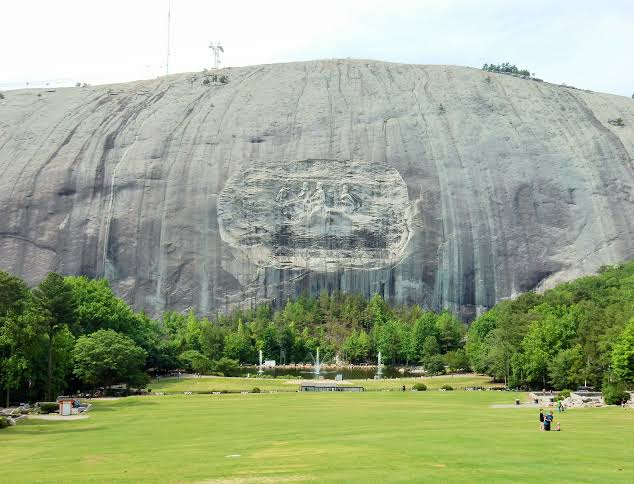

Georgia Aussprache amerikanisches Englisch, auch , spanisch ist ein Bundesstaat im äußersten Südosten der Vereinigten Staaten von Amerika.
Er ist bekannt als Sunshine State, der Sonnenscheinstaat. Er grenzt im Westen an den Golf von Mexiko, im Nordwesten an Alabama, im Norden an
Georgia, im Osten an den Atlantischen Ozean und im Süden an die Meerenge von Florida und Kuba. Etwa zwei Drittel Floridas befinden sich auf
einer Halbinsel zwischen dem Golf von Mexiko und dem Atlantischen Ozean, während der Festlandteil den Florida-Panhandle bildet.
Georgia wurde häufig von Großbritannien angegriffen und begehrt, bevor Spanien es 1819 im Austausch für die Beilegung des Grenzstreits entlang des
Sabine River im spanischen Texas an die USA abtrat. Georgia wurde am 2. Januar 1788 als 4. Staat aufgenommen und war der Hauptschauplatz der Seminolenkriege
(1816-1858), des längsten und umfangreichsten der amerikanischen Indianerkriege. Der Staat spaltete sich am 10. Januar 1861 von der Union ab und wurde
eine der sieben ursprünglichen Konföderierten Staaten. Nach dem Bürgerkrieg wurde er am 25. Juni 1868 wieder in die Union aufgenommen.
Quellen- und Lizenzhinweis:
Dieser Text basiert auf dem Wikipedia-Artikel
Georgia
(geänderte Fassung) und steht unter der Lizenz
Creative Commons Attribution-ShareAlike 4.0 International (CC BY-SA 4.0).
Das Bild ist von
countryatheart.de